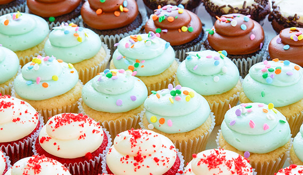
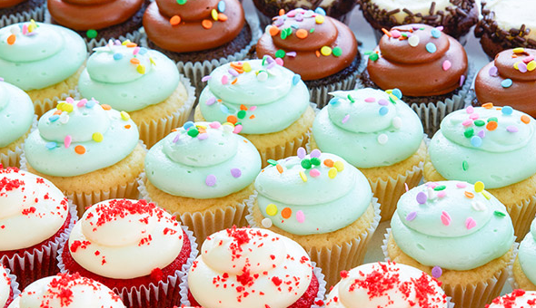

Not only are California rolls my favorite sushi, they are one of my favorite things to eat! This roll is my favorite because I don't like any rolls with raw fish! In my opinion, minestrone is the best soup. I am a huge fan of soup, and I would have to say that minestrone is my favorite. My best friends dad makes the best tasting minestrone ever! Cupcakes are delicious! My favorite flavor of cupcakes are choclate. They are the perfect dessert to go with any meal!
Hand Picked Recipes
Press the "Recipes" link to see my favorite recipes!